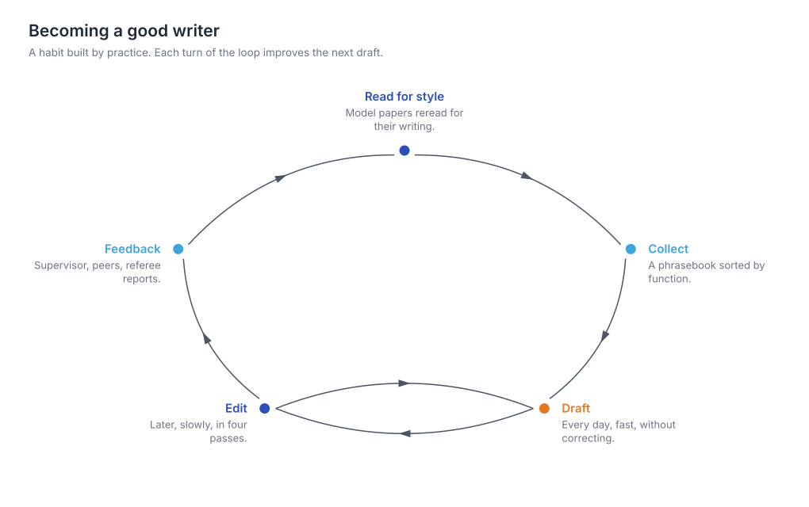

Guides · Writing
Becoming a good scientific writer
Good writing is a habit, not a talent. Read for style, keep a phrasebook, write every day, get feedback, and revise in passes. A practical training plan for researchers who write in a second language.

Path · Finishing and moving on · step 5 of 5

Most researchers who write clearly were not born that way. They read a lot, imitated writers they admired, received many corrections, and kept writing. This guide turns that slow process into a deliberate practice.
Read as a writer#
When you read a paper you find clear, read it a second time for the writing only. Ask:
- How does the first paragraph of the introduction hook the reader?
- How is a definition introduced? A theorem? An example?
- How long are the sentences? How long are the paragraphs?
- How does the author move from one section to the next?
- What does the author not say?
Choose three or four model papers or books in your field and return to them regularly. In mathematics, many researchers learn from the expository style of authors like Paul Halmos, whose essay How to Write Mathematics (1970) remains one of the best short texts on the subject.
Keep a phrasebook#
Copy into a notebook (or a file) every phrase you find useful, sorted by function: announcing a result, introducing a definition, comparing with earlier work, starting a proof, concluding. After a year, you will have your own reference, adapted to your field and your taste. The Academic phrasebook on this site is a starting point.
Write every day#
Writing is easier when it is routine. Reserve a short block every day, even thirty minutes, for writing: a paragraph of a paper, a proof, notes on a paper you read. Do not wait to "have something to write". Writing is how you find out what you know.
Separate drafting and editing#
When you draft, write fast and do not correct. When you edit, read slowly and change everything. Doing both at once is the main cause of the blank page. The guide Revising paragraphs describes an editing method in four passes.
Get feedback#
- Ask your supervisor to comment on a short text early, not on a finished paper.
- Exchange drafts with another student: you will learn as much from reading their text as from their comments on yours.
- Read referee reports carefully. They are free writing lessons.
- Keep a list of the corrections you receive often. Check your next draft against it.
Write for a reader#
Imagine one specific reader: a good student in your field who has not read your previous work. Write for that person. They need definitions, context and a clear path through the argument. They do not need every detail of every calculation in the main text.
Habits of clear writers#
- One idea per sentence, one job per paragraph.
- Precise verbs and concrete nouns.
- The same word for the same thing, always.
- Definitions before use, examples after definitions.
- Short sections, each with a clear goal.
- No sentence the reader would not miss if it were deleted.
Writing in a second language#
Writing in English when it is not your first language is normal in research. A few practical points:
- Keep your sentences simple. Clear and simple English is better than complicated English with mistakes.
- Learn the patterns of your field rather than general literary English.
- Use a dictionary of collocations to check which words go together ("make an assumption", "draw a conclusion").
- Read your text aloud. Many errors become audible.
- Ask a colleague to read the introduction, the most visible part of the paper.
A twelve-week training plan#
- Weeks 1–2: choose three model papers. Read them for style and start your phrasebook.
- Weeks 3–4: rewrite the abstract and introduction of your last paper or thesis chapter using the abstract and introduction guides.
- Weeks 5–8: write thirty minutes every day. Once a week, revise one page in four passes.
- Weeks 9–10: exchange a draft with a colleague and comment on theirs.
- Weeks 11–12: build your list of frequent corrections and check a full draft against it.
Checklist#
- I have three model papers that I reread for their writing.
- I keep a phrasebook sorted by function.
- I write for a short block every day.
- I draft and edit at different times.
- I ask for feedback early and keep a list of frequent corrections.
Discussion
Questions, corrections and your own experience are welcome. Comments live in the forum, on GitHub Discussions, with Markdown and LaTeX.